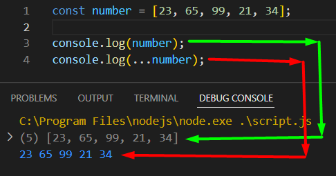
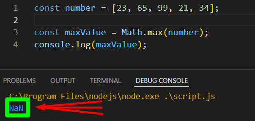
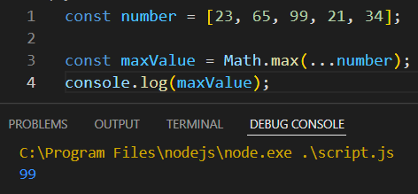
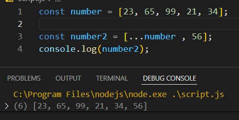

একটা array কে ২ ভাবে পাওয়া যায় ।
১, সরাসরি array কে পাওয়া যায় ।
২, array এর উপাদান পাওয়া যায় ।

যেমন কোন array এর মধ্যে থেকে সব থকে বড় মান বের করতে হলে সেটাকে if else দিয়ে বের করতে হত ।
কিন্তু খুব easy তে কোন array এর সব থেকে বড় মান বের করা যায় ।
তবে সেটা করার জন্য Math.max() , এর সাহায্যে করা যায় ।

তবে সেটা করতে গেলে NaN আসবে , কারন এখানে সরাসরি একটা array পেয়ে যাচ্ছে ।
তাই function টা কাজ করতে পারছেনা ।
সে জন্য function এর মধ্যে array টাকে না দিয়ে সেটার মান গুলা দিতে হবে ।
নিচের নিয়মে array এর নামের আগে{ ... (three dot) } দিতে হবে তাহলে Math.max() কাজ করবে ।

এই array কে অন্য কোন array এর মধ্যে রেখে সেটার সাথে কোন নতুন value যোগ করতে হলে ,
সেটাকে নিচের নিয়মে যোগ করতে হবে ।
